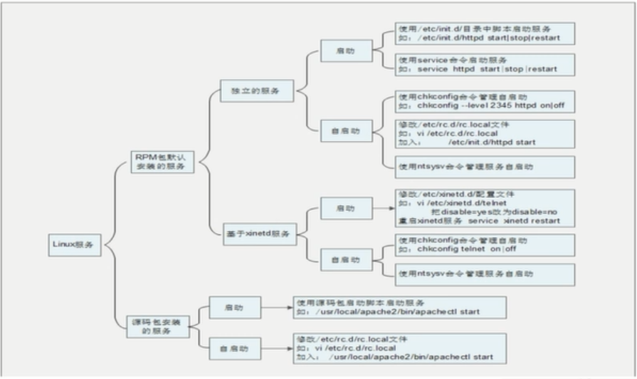

linux简介内容
linux诞生1991年 芬兰大学生李纳斯
centos/ubuntu/suse均是在linux内核基础上的发行版本
linux内核官网(https://www.kernel.org/)
开源软件(软件免费/可获取源代码/可以自由散播改良或者销售)
linux应用场景(企业部署服务器/嵌入式开发[手机,平板,智能家电,机顶盒]/电影娱乐业[影片制作])
linux网络配置
网络配置
网络适配器：真实网卡本地连接/无线网络/VM8/VM1
桥接：利用本地真实网卡(虚拟机需要设置和本地真实网卡相同网段的IP地址即可实现通信/有网线的情况下使用)
[优点：可以实现同网段的机器通信 缺点:占用IP,可能会IP冲突问题]
NAT：利用虚拟网卡VM8(如果本机可以访问互联网，虚拟机同样可以)
[优点：不会占用IP]
host-only：利用虚拟网卡VM1
[仅可以本机通信/无网线情况下使用]
临时设置IP地址(重启后失效)：ifconfig eth0 192.168.1.157
如果需要永久生效，需要修改配置文件信息
注意：
网络适配器中设备状态已连接(网卡是否通电)
如果本地和虚拟机均设置好且还ping不通，找到虚拟机网络编辑器中桥接选项切换自动为具体的有线网络
df：查看磁盘占用率
linux系统分区
linux系统分区(磁盘分区)-->一面柜子分为男/女两个小柜子
主分区(最多4个)
扩展分区(只能1个/不能写入数据，只能包含逻辑分区)
主分区和扩展分区最多有4个
逻辑分区可以正常的写入数据和格式化(1，2，3，4只能被主分区占用。只能从5开始)
格式化(目的：为了写入文件系统-->切割等大小数据块block[数据写入并不一定连续]/清空数据/为数据块编号)-->将柜子切割分为隔断
分区设备文件名(创建磁盘名称/创建目录)
分区分配挂载点(磁盘下创建文件夹/目录)
必须分区(/根目录，swap分区[交换分区，内存的2倍，不可超过2G])
推荐分区(/boot单独分区[启动分区 200M])
linux目录结构
目录介绍：
bin目录：保存系统命令
/bin/(binary二进制)：所有用户均可以使用
/sbin(super):管理员权限可以使用
/boot：系统启动文件目录
/etc：默认配置文件目录
/dev：设备文件保存位置
/home：普通用户的/home/user目录
/lib：系统函数库
/lost+found：容灾文件碎片(系统意外崩溃或者机器意外关机产生文件碎片目录位置)
/media：挂载软盘/光盘
/mnt：挂载U盘/移动硬盘
/misc：挂载NFS服务
/opt：第三方软件保存位置(/usr/local:软件保存位置)
/proc：当前系统运行进程以及硬件信息(内存中)
/sys：当前系统内核相关性信息(内存中)
/root：管理员root家目录
/srv;系统启动之后产生的数据
/tpm：系统写入的临时文件
/usr(unix software resource)：系统软件资源目录
/var：动态数据保存位置(缓存/日志/软件运行产生文件)
linux注意事项
服务器不允许关机，只能重启
重启时应该关闭服务
防火墙(保安[起过滤作用])：IP/端口号/MAC地址/包中数据据此来判断
不要在服务器访问高峰运行高负载命令
远程配置防火墙不要把自己踢出服务器
指定合理的密码规范并定期更新
合理分配权限
定期备份重要数据和日志
linux知识扩展
扩展知识:
linux严格区分大小写
tab键可以自动补全
linux系统中一切皆文件
硬盘文件在/dev/sd[a-p]
命令行写入内存中的只是临时生效，若长久生效即写入配置文件
linux不依靠扩展名来却分文件类型(可执行权限)
压缩包：tar
二进制：rpm
网页文件：html
脚本文件：sh
配置文件：conf
linux所有存储设备都必须挂载之后用户才可以使用(硬盘/U盘/光盘)
挂载：设备文件名和挂载点联系在一起即为挂载(在linux目录中起一个名字/分配盘符C/D/E)
windows下的程序不能直接在linux中安装和运行
linux实战应用：
vmware安装
快照的使用(记录当前linux状态)
克隆的使用(生成两台机器)
linux为什么选择命令行？
windows(应用型) linux(服务器型) 定位不同
常见的报错信息:
command not found
no such file or directory
查看命令ls
命令格式： 命令 [-选项] [参数]
ls -la /etc
ls 查看当前目录文件
ls -a 显示当前目录所有文件(包括隐藏文件)
ls /usr 查看其他目录文件
ls -l 显示文件的详细信息(效果=ll)
ls -lh 查看文件的详细信息(人性化显示当前文件的大小)
ls -i 查看当前文件的PID
文件/目录操作
mkdir 创建文件夹
mkdir -p /usr/local/tools/jdk 递归创建文件(连续两级创建不存在文件夹)
mkdir /usr/local/tools1 /usr/local/tools2 连续创建两个文件夹
cd /usr/local/tools 切换目录
pwd 查看当前目录绝对路径
cd . 表示本级目录
cd .. 表示上级目录
rmdir 删除空目录(无子目录)
cp /etc/grub.conf /tmp 复制grub.conf到tmp目录下去
cp -r /tmp/japan/cangjing /root 复制cangjing目录到root目录中
cp /root/install.log /root/install.log.syslog /tmp 复制多个文件install.log install.log.syslog 到tmp目录中
cp -p /root/install.log /tmp 保存源文件属性(创建时间)将install.log复制到tmp目录中
cp -r /tmp/japan/longze /root/ty 复制文件目录并改名
mv /tmp/japan/cangjing /root 移动cangjing到root目录下
mv /tmp/japan/cangjing /root/nvshen 复制文件并改名
mv cangjing canglaoshi 对文件改名
rm grub.conf 删除文件(会有提示信息)
rm -f grub.conf 删除文件(不会有提示)
rm -rf /tmp/japan 删除目录
touch program file 创建两个文件
touch "program file" 创建带空格的文件
cat /etc/issue 浏览文件内容
cat -n /etc/issue 浏览带行号的文件
tac -n /etc/issue 倒叙带行号查看文件
more /etc/services 查看文件(空格[f]向下翻页查看/enter向下换行查看/q或者Q退出)
less /etc/services 查看文件(pageup向上翻页/↑向上换行/[/搜索词：n向下查找])
head -n 7 /etc/services 查看文件前7行
head /etc/services 默认显示文件前10行
tail -n 3 /etc//services 查看文件末尾3行
tail /etc/services 默认查看文件末尾10行
tail -f message.log 动态查看日志
tail -20f message.log 动态查看日志(加载末尾20行)
软/硬链接
ln -s /etc/issue /tmp/issue.soft
软连接(相当于windows的快捷方式)：
特点：
权限[lrwxrwxrwx]实际会根据源文件的权限来控制
文件很小
有箭头表示方向
ln /etc/issue /tmp/issue.hard
硬链接(相当于copy)
特点：
ls -i issue.bak.hard
硬链接的唯一i节点(标识id)会和源文件相同，而软连接不会。
缺点：
硬链接不能跨分区
硬链接不能针对目录进行操作
区别：
相比较拷贝源文件(同步更新文件内容)
当删除源文件，软连接会报错找不到原文件，而硬链接还可以正常访问。
文件权限
权限第一种方式
所有组/所属组/其他人
r/w/x读写执行
chmod [ugoa] {rwx} [文件/目录]
chmod g=rwx japanStory.list
chmod u+x,o-r japanStory.list
权限第二种方式
r-->4 w-->2 x-->1
rwx rw- r--
764
递归修改文件权限
chmod -R 755 /tmp/a
删除一个文件并不是对文件有写权限，而是对该文件所在目录有写权限。
file：
r:cat/more/head/tail/less/more
w:vi
x:script commmand
directory：
r:ls
w:touch/mkdir/rmdir/rm
x:cd
改变文件所有者(只有root用户可以)
chown root /etc/demo
改变文件所属组
chgrp root /etc/demo
linux中新建文件/目录的默认权限配置
rw-r--r-- 文件(默认不具有可执行权限)
rwxr-xr-x 目录
修改每次默认创建目录是的权限配置
umask 023（777-023=754[这才是真正的文件权限]）
查看系统默认创建目录的权限配置
umask -S
搜索查找
搜索文件
名称
find /etc -name init(在/etc目录中精确查找init)
find /etc -name *init*(在/etc目录中模糊查找init)
find /etc -name init?（在/etc目录中查找4个字母的文件）
find /etc -iname init(查找文件不区分大小写)
文件大小
find /etc -size +204800(linux存储默认单位数据块[0.5kb]100M=102400KB=204800KB)
所有者
find /home -user ty
find /home -group ty
时间
find /etc -cmin -5五分钟以内被修改属性的文件和目录change
find /etc -mmin -5五分钟以内被修改内容的文件和目录modify
复杂
find /etc -size +163840 -a -size +204800(-a 并且 -o或者)
类型(文件/目录)
find /etc -name init* -a -type d(f文件 d目录 l软连接文件)
对查找后文件进行操作(详细信息)
find / -name runserv* -exec ls -l {} \;
删除特殊文件"niuren haha"
ls -i 显示文件i节点
find / -inum 31531 -exec -ls -lh {} \;
其他查找方式(locate不可以查找到tmp目录中的文件)
updatedb 手动同步文件资料库
locate demo 根据文件名快速查找文件
locate -i demo 不区分大小写快速查找文件
linux中在删除文件时，并没有询问机制，而是因为有文件别名造成。
which
which cp 搜索命令所在的目录以及命令的别名信息
where
whereis cp 搜索命令所在目录以及帮助文档路径
grep
查找文件内容
grep mutiuser /etc/inittab 查找文件内容中
grep -i mutiuser /etc/inittab 不区分大小写查找文件内容中的字符串内容
grep -v ^# /etc/inittab 查看文件内容(#号的注释行)
帮助信息
查看帮助信息
man ls 查看命令的帮助信息
q 退出查看文档
/l 查看文档中带有l的内容，按n进行下一个查找
man services 查看配置文件services的帮助信息
1是命令的帮助文档(优先) 5是配置文件的帮助
man 5 passwd 查看配置文件的帮助文档
简短快速的查看帮助信息
whatis cp 查看cp的命令的简短帮助信息
apropos services 查看配置文件的帮助信息
touch --help 只查看命令的选项
info ls 和man差不太多
help 查看shell内置命令帮助文档
help cd
help umask
help pwd
压缩文件
useradd ty 添加新用户
passwd ty 设置用户密码
who
格式 登录用户名 登陆终端 tty本地终端 pts远程终端 登陆时间 IP地址
w
获取当前登陆信息的详细情况，linux连续运行了多久，linux的负载情况，当前正在执行什么命令，当前执行命令的占用时间
uptime
系统连续运行多长时间了
压缩文件格式小结
（压缩文件格式 gz .tar .tar.gz .zip .bz2 .tar.bz2）
.gz gzip gunzip(gzip -d)
.tar tar -cf -xf
.tar.gz tar -zcf -zxf
.zip zip -r unzip
.bz2 bzip2 bunzip2
.tar.bz2 tar -cjf -xjf
gzip 压缩文件(不保留源文件，不能压缩目录，压缩比很高)
gunzip / gzip -d 解压缩文件
tar
-c 打包
-v 显示详细信息
-f 制定文件名
-z 打包同时压缩
tar -cvf japan.tar japan -->gzip japan.tar
或者
tar -zcvf japan.tar.gz /etc/tmp
-x 解包
-v 显示详细信息
-f 制定压缩文件
-z 解压缩
tar -zxvf japan.tar.gz
zip(linux和window都支持的格式)(保留源文件/可以压缩目录/压缩比不太高)
-r 压缩目录
zip -r japan.zip japan （压缩后的文件名，要压缩的目录）
zip boduo.zip boduo （压缩后的文件名，文件或者目录）
unzip 解压缩文件或者目录
unzip boduo.zip 解压缩文件
gzip的升级版本bzip2(压缩后保留源文件/压缩比非常惊人)
bzip2 -k boduo 产生压缩文件后保留原文件
也可以bzip2 boduo 产生压缩文件后但是不保留源文件
tar -cjf japan.tar.bz2 japan = bzip2 -k japan
bunzip2解压缩
bunzip2 -k boduo.bz2 解压文件
tar -xjf japan.tar.bz2
基础查看
write 给在线用户发送消息
write 用户名
hello 内容
ctrl + d 结束发送
wall 给所有在线用户发送消息
wall message
ping 判断网络是否畅通
ping 192.168.1.157（linux 不会自动断掉）
ping -c 4 192.168.1.157（ping157后4次自动终端）
ifconfig 查看当前计算机IP
ifconfig eth0 192.168.1.158 临时设置IP，重启后失效
mail 查看发送电子邮件
mail 用户名 ->ctrl d 结束输入
mail 查看邮件内容
输入h显示邮件列表 输入邮件id查看详细信息 d 邮件id 删除指定邮件 q 退出
last 所有用户登陆信息
lastlog
lastlog -u 502(uid) 查看指定用户上次登陆的时间
traceroute 显示数据包到主机间的路径
traceroute www.sina.com.cn 查看新浪
netstat显示网络相关信息
-t tcp协议(三次握手安全，速度慢[打电话])
-u udp协议(不经过握手，速度快[发短信])
-l 监听
-r 路由
-n 显示IP地址和端口号
netstat -tlun 查看本机监听端口
netstat -an 查看本机所有的网络连接
netstat -rm 查看本机路由表
setup 配置网络(redhat特有)
界面化操作网络配置(永久生效)
mount 光盘的挂载使用方法
mount 设备文件名 挂载点
mount /dev/sr0 /mnt/cdrom
去除挂载 umount /dev/sr0
系统操作
shutdown
-r 重启
-h 关机
-c 取消前一个关机命令
shutdown -h now 马上关机
shutdown -h 20:30 指定时间关机
shutdown -r now 马上重启
服务器只能重启不能关机
关机的其他命令
halt
poweroff(不太安全:相当于直接断电)
init 0
其他重启命令
reboot
init 6
cat /etc/inittab 查看系统运行级别
系统的运行级别
0 关机
1 单用户(相当于安全模式[启动最少程序进行修复工作])
2 不完全多用户，不含nfs服务
3 完全多用户
4 未分配
5 图形界面
6 重启
runlevel 查看当前系统运行级别
logout 退出到登陆界面
文本编辑
vim文本编辑器
vi 文件名 进入命令模式
->输入i a o 进入插入模式
<-esc进入命令模式
->输入命令回车进入编辑模式
->输入:wq退出
:set nu 让文本显示行号
插入命令
a：在光标所在字符后插入
A：在光标所在行为插入
i：在光标所在字符前插入
I：在光标所在行行首插入
o：在光标下插入新行
O：在光标上插入新行
以上操作均需要esc退出到命令模式后进行
定位命令
：set nu设置行号
：set nonu取消行号
gg：到第一行
G：到最后一行
nG：到第n行
：n到第n行
$：移至行尾
0：移至行首
删除命令
x：删除光标所在处的字符
nx：删除光标所在处后n个字符
dd：删除光标所在行
ndd：删除n行
dG：删除光标所在行到文件末尾的内容
D：删除光标所在处到行尾内容
:n1，n2d：删除指定范围的行
复制和剪切命令
yy：复制当前行
nyy：复制当前行一下的n行
dd：剪切当前行
ndd：剪切当前行以下n行
p：粘贴在当前光标所在行的下面
P：粘贴在当前刚表所在行的上面
替换和取消的命令
r：替换光标处所在字符
R：从光标所在处开始替换字符，esc结束
u：取消上一步操作
搜索和搜索替换命令
/string：搜索指定字符串
:set ic -> /string 不区分大小写搜索指定字符串
n：搜索指定字符串的下一个出现位置
:%s/ftp/yangmi/g 全文替换将ftp替换为yangmi(g不加询问)
:100,102s/yangmi/ftp/c 100-102行yangmi替换成ftp(c每一个位置都添加询问)
保存和退出命令
:w 保存修改
:wq 保存修改并退出
ZZ：保存修改并退出
:q！不保存退出
wq！保存修改并退出(仅文件所有者及root可以使用)
命令模式下操作:
:r /etc/issue 将此文件中内容导入到当前光标中
:r !which ls 查找当前命令存放位置
:r !date 插入当前日期
自定义快捷键
ctrl+v+p -> ^p
:map ^p I# 调到行首添加注释
:map ^B 0x 对当前行取消注释
:map ^H aaa@qq.com 快捷键添加内容
连续行注释
:1,4s/^(行首)/#(替换内容)/g 对连续行添加注释
:1,4s/^#//g 将连续行行首注释取消
:1,4s/^/\/\//g 对连续行添加//注释
:ab mymail aaa@qq.com 神奇的将mymail回车或者空格后自动变成aaa@qq.com
软件包简介
linux软件包分类(类比：绿色版/安装版)
源码包（脚本安装包setup.exe/.sh）
优点:
开源，可修改源代码
可以自由选择所需功能
编译安装，会提高软件的效率
卸载方便
缺点：
安装步骤较多搭建lanp环境容易出现拼写错误
相比较二进制安装编译时间过长
安装过程中一旦报错很难解决
二进制包（rpm包，系统默认包）[不能看到源代码，安装速度更快]
优点：
包管理系统简单实现包的安装升级查询和卸载
安装速度比源码包快
缺点：
事先经过编译，不能看到源代码
功能不如源码包灵活
rpm软件的依赖性（安装顺序按照依赖性的最大值进行安装
卸载按照安装的顺序倒叙卸载
）
httpd -2.2 .15 .el6.centos.1 .i686 .rpm
软件包名 软件版本 软件发布次数 适合的linux平台 适合的软件平台 rpm包拓展名
rpm依赖性
树形依赖：a->b,(d->e)->f
环形依赖：a->b->c->a（a,b,c同时安装）
模块依赖：模块依赖查询网站 www.rpmfind.net(这里搜索模块会出现一个需要的安装包)
rpm包
包全名：操作的是没有安装的软件包时，使用包全名而且注意路径的正确性
包名：操作的是已经安装的软件包时使用包名（/var/lib/rpm中的数据库）
rpm安装
rpm -ivh 包全名
-i install 安装
-v verbose 显示详细信息
-h hash 显示进度
--nodeps 不检测依赖性(如果使用，则该软件保如果有依赖性，则不可使用)
rpm升级
rpm -Uvh 包全名
-U 升级
rpm卸载
rpm -e 包名
-e erase 卸载
rpm -q 包名 查询包是否安装
rpm -qa 查询所有已安装包
rpm -qa |grep httpd 查询所有和apache相关的包
rpm -qi 包名 查询软件保详细信息
rpm -qip 包全名 查询未安装包详细信息
rpm -ql 包名 查询包文件安装位置
rpm -qf 系统文件名 查询系统文件属于哪个rpm包
rpm -qR 包名 查询软件包的依赖性
rpm -qRp 包名 查询未安装包的依赖性
rpm包校验
rpm -V 已安装包名
S 文件大小是否改变
M 文件的权限或文件类型是否被改变
5 文件md5校验和是否发生改变（可以堪称文件内容是否改变）
D 设备中代码是否改变
L 文件路径是否改变
U 文件的属主（所有者）是否改变
G 文件的属组是否改变
T 文件的修改时间是否改变
c 配置文件
d 普通文档
g 鬼文件很少见表示该文件应该被rpm包含
l 授权文件
r 描述文件
rpm2cpio 包全名 |\
cpio -idv .文件的绝对路径
rpm2cpio 将rpm包格式转换为cpio（标准工具，用于创建软件档案文件和档案文件中提取文件）
具体操作案例
rpm -qf /bin/ls
mv /bin/ls /tmp/
rpm2cpio /mnt/cdrom/Packages/coreutils-8.4-19.el6.i686.rpm|cpio -idv ./bin/ls
cp /root/bin/ls /bin/
yum
网络yum源首先需要配置本地ip可以链接网络
yum源地址信息
vi /etc/yum.repos.d/CentOS-Base.repo
[base] 容器名称一定要放在[]中
name 容器说明 可以自定义
mirrorlist 镜像站点 可以忽视掉
baseurl yum源服务器地址
enabled 此容器是否生效=1为生效=0为不生效
gpgcheck =1rppm数字证书生效=0不生效
gpgkey 数字证书的公钥文件保存位置不用修改
常用yum命令
yun list 查询所有可用软件保列表
yum search 关键字(包名) 搜索服务器上所有和关键字相关的软件包
yum -y install 包名
-y 自动回答yes
yum -y install gcc c语言编译器（编译源码包）
yum -y update 包名 升级安装软件包
yum -y remove 包名 卸载软件包
yum注意事项
安装最小化尽量不卸载
yum 升级必须加包名不然升级包括linux内核可能影响系统启动
yum卸载可能卸载掉系统依赖的程序导致系统出现意外错误
yum安装软件包组（一个完整的功能）
yum grouplist 列出所有可用软件组列表
yum groupinstall 软件组名 安装指定软件组
yum froupremove 软件组名 卸载指定软件组
yum光盘样本源
挂载光盘
mount /dev/sr0 /mnt/cdrom/
mount 查看挂载点
让网络yum源文件失效
cd /etc/yum.repos.d/
mv centos-base.repo centos-base.repo.bak
mv centos-debuginfo.repo centos-debuginfo.repo.bak
mv centos-vault.repo centos-vault.repo.bak
使centos-media.repo生效
修改光盘yum源文件
vi centos-media.repo
[c6-media]
name=centos-$releaserver -Media
baseurl=file://mnt/cdrom //地址为自定义光盘挂载点
#file:///media/cdrom
#file:///media/cdrecorder //将这两个不存在的地址注释掉
gpgcheck=1
enabled=1 =1使yum源配置文件生效
gpkey=file:///etc/pki/rpm-gpg/rpm-gpg-key-centos-6
使用yum list可以查看容器名称是否为新配置容器的名称c6-media
源码包
源码包和rpm包区别
安装之前：概念上：源码包开源的，安装更加自由，安装效率更高，更加容易报错
不能看到源代码，经过编译，安装更快，报错容易解决，只有依赖性的问题
安装之后：安装位置不同
：源码包人为手动指定安装位置
：rpm安装在系统默认位置
rpm默认安装位置：
/etc 配置文件安装目录
/usr/bin/ 可执行命令安装目录
/usr/lib 程序所使用的函数库保存位置
/usr/share/doc 基本的软件使用手册保存位置
/usr/share/man/ 帮助文件保存位置
源码包一般指定在：/usr/local/软件名
安装位置不同带来的服务的管理方法不同：
rpm包：
/etc/rc.d/init.d/http start
service httpd start（redhat自带service）
源码包：
/usr/local/apahce2/bin/apachet1 start
安装源码包
安装c语言编译器gcc
下载源码包
http://mirrir.bit.edu.cn/apache/httpd
源代码保存位置/usr/local/src
软件安装位置 /usr/local
如何确定安装过程报错
安装过程停止
并出现error earning或no的提示
du -sh httpd-2.2.9
查看软件包大小
编译前准备(配置)->make 编译->make install安装
make 编译源码包
make clean 清楚上述make产生文件
make install 编译安装源码包
vi INSTALL 查看源码包的安装方法
源码包卸载不需要卸载没命令直接删除安装目录即可不会遗留垃圾文件
高并发情况下：使用源码包安装，执行效率更高。
用户和组
/home/用户名 普通用户和所属组的家目录 权限700
/root/ 所有者和所属组都是root 权限550
如果想要把一个普通用户变成超级用户：修改vi /etc/passwd 文件中的用户id为0
useradd a 添加用户a
passwd a 给用户a设置密码
grep 8080 /etc/shaow 查看shaow文件中的8080信息
如果编写内容有空格需要添加双引号
添加用户默认值配置文件 /etc/default/useradd
home=/home 用户家目录
create_mail_spool=yes 是否建立邮箱等
和 vi /etc/login.defs
pass_min_len=5 密码最小位数等
userdel 删除用户
su 用户名 切换用户
su - root 全状态切换root用户
groupadd 组名 添加组
groupmod -n 新组名 旧组名 修改组名
groupdel 组名 删除组名(不允许有初始用户可以有附加用户)
其他权限
acl权限(解决身份不足问题[处理临时人员对文件的操作权限])linux基本均支持acl权限
所有者/所属组/其他人 读/写/执行权限
条件：需要查看该文件所在分区是否支持
df -h 查看分区使用状况和分区占用容量
acl权限指：单独对上述临时人员赋予相对应操作文件的权限
注意：需要查看该文件所在分区所在分区是否支持acl权限
dumpe2fs -h /dev/sda3(具体分区可变)
default mount options : acl 默认挂载选项支持acl
临时性开启分区acl权限
mount -o remount,acl / 重新挂载根分区，并且添加acl权限
永久性开启分区acl权限
vi /etc/fstab 打开系统开机自动挂载文件
修改对应目录defaults,acl mount -o remount / 重新挂载文件系统或者重启系统使修改文件生效
setfacl 选项 文件名 设置acl权限
gpassws -a 用户名 组名 将用户添加到对应的组
cat /etc/group 查看相应的人员和组配置信息
chown root:tgroup /project 调整project没目录权限
setfacl -m u:st:rx /project/ 给用户st赋予对/project/文件的rx权限
getfacle 文件名 查看acl权限
groupadd tgroup2
setfacl -m g:tgroup2:rwx pproject/ 给额外组人员赋予对/project/ 文件的rwx权限
mask用来指定最大有效权限
如果赋予用户acl权限，需要和mask权限想与即用户真正权限
setfacl -m m:rx 文件名（目录） 修改最大有效权限
getfacl /project/ 查看该文件权限
setfacl -x u:用户名 文件名 删除指定用户的acl权限
setfacl -x g:组名 文件名 删除指定用户组的acl权限
setfaclq -b 文件名 删除文件下所有acl权限
setfacl -m u:st:rx -R /project/ 递归设置acl权限
默认acl权限：如果父目录设定了acl权限，那么父目录下所有新建的子文件都会继承父目录的acl权限
setfacl -m d:u:用户名:权限 文件名(目录)
suid权限：
只有可以执行的二进制程序才能设定suid权限（执行命令）
命令执行者要对该程序拥有x（执行）权限[其他人必须有x执行权限]
命令执行者在执行该程序文件时，相当于属主（文件所有者）身份执行
setUID权限只有在该程序执行过程中有效，也就是说什么的改变只有在程序指向性过程中有效（奥特曼变身）
设定suid:4代表suid
chmod 4755 文件名
chmod u+s 文件名
取消setUid
chmod 755 文件名
chmod u-s 文件名
如果赋值的时候显示的时S，那么就是报错信息（原因就是必须有x执行权限）
passwd默认有suid权限，默认情况下不允许设置suid
linux中权限过高文件/错误文件，一般都会显示红色
setuid比较危险，设置需谨慎 比如对/vi命令， /， /usr目录
sgid权限：
setGid：（二进制文件/目录都可以）
针对文件：
只有可执行的二进制程序才可以设置sgid权限
命令的执行者要对该程序拥有x（执行）权限
命令在执行程序的时候，组身份升级为该文件的属组
setgid权限同样时该程序执行过程中有效，也就是说组神风该vi按只有在程序执行过程中有效
/usr/bin/locate(默认有sgid权限) -> /var/lib/mlocate/mlocate.db
普通用户使用locate时，组身份会升级为slocate对mlocate.db有制度权限，命令结束，身份结束
针对目录：
普通用户必须对此目录拥有r和x权限，才能进入此权限
普通用户在此目录中的有效组会变成此目录的属组
若普通用户对此目录拥有w权限时，新建文件的默认属组也是这个目录的属组
2代表sgID
chmod 2755 文件名 chmod 755 文件名 取消setGID
chmod g+s 文件名 chmod g-s 文件名 取消setgID
sticky bit黏着位权限
只能对目录有效
普通用户对该目录拥有w和x权限，即普通用户可以在此目录拥有写入权限
如果没有黏着位，普通用户有w权限，可以删除该目录下的所有文件，包括其他用户创建的文件
一旦有黏着位，除了root可以删除所有文件，普通用户即使拥有w权限，也只能删除自己创建的文件，不可以删除其他用户创建的文件
ll -d /tmp/
设置和取消黏着位
chmod 1755 目录名
chmodo+t 目录名
chmod 777 目录名
chmod o-t 目录名
sudo权限
root把本来只能超级用户执行的命令赋予普通用户执行
sudo的操作对象是系统命令（关机，重启）
首先需要赋予普通用户执行系统命令的权限（配置文件中配置）
visudo
sc ALL=/sbin/shutdown -r now 命令写的越具体，权限越小。
su sc 切换成sc用户后使用被赋予命令必须添加sudo
sudo shutdown -r now
root ALL=(ALL) ALL
用户名 被管理主机地址（目标主机）=（可使用身份） 授权命令（绝对路径）
#%wheel ALL=(ALL) ALL
组名 被管理主机地址=（可使用身份） 授权命令（绝对路径）
锁文件
chattr [+-=] [选项] 文件/目录名 （锁文件）
选项：
i：针对文件：不允许任何人包括root对文件进行任何操作，只能看
针对目录：只能修改目录下的文件数据，但是不允许建立和删除文件
查看文件系统属性
lsattr 选项 文件名
选项：
-a：像是所有文件和目录
-d：若目录：尽力出目录文件属性而不是子文件的
a：（图书馆开放，图书锁住）
如果对文件设置a属性，只能在文件中增加数据，但是不能删除也不能修改数据
如果对目录设置a属性，只允许在目录中建立和修改文件，但是不允许删除
文件统计
df [选项] [挂载点]
df -h 人性化显示
du [选项] [目录或文件名]
ll -h
可以查看文件的大小
du -sh /etc
-h：人性化显示kb,mb,gb
-s: 统计总占用量
du/df命令的区别
df命令是从文件系统考虑，不光考虑文件占用的空间，还要考虑被命令，程序，进程等占用的空间
（常见为：文件已经删除，但是程序并没有释放空间）
du命令是面向文件的，只会计算文件或者目录占用的空间
相比较来说，df命令比较准确
检测文件状态dumpe2fs /dev/sba1
分区是大柜子变成小柜子，格式化是小柜子打入隔断
硬盘分区
分区：（主分区/扩展分区）
扩展分区只能有一个，主分区最多有四个
一般是三个主分区，一个扩展分区
扩展分区不能存储数据和格式化，里面的逻辑分区是可以的
IDE硬盘linux最多支持59个逻辑分区
SCSI硬盘linux最多支持11个逻辑分区
不论主分区有几个，扩展分区总是从5开始
centos6.3支持的文件系统是ext4
fdisk分区步骤如下：
使用vmware添加一个新硬盘
fdisk -l 查询系统中有多少被识别的硬盘
fdisk /dev/sdb 使用fdisk命令分区
m帮助信息
d 删除分区
l 显示文件系统类型 82linux swap 83 linux分区
n 新建分区
q 不保存退出
t 改变一个分区的系统id（改变文件系统类型）
w 保存并退出
p 显示分区列表
如果输入错误，可以按ctrl+删除键即可删除
1.输入n 选择主分区/扩展分区
2.输入分区号1 建议依次分区
3.直接回车，默认第一个分区
4.+2G 对第一个分区分配大小
5.p查看一下分配好的分区
6.输入n
7.输入e 分配扩展分区
8.输入2 回车 默认将剩余的空间全部分为扩展分区
9.p 查看一下分配好的分区
10.n 新建分区出现了逻辑分区
11.回车默认从主分区依次往后排
12.+2G 设置sdb5大小为2G
13.p查看一下分配的分区列表
14.w 保存退出
15.如果在两次保存后出现必须重启Linux后方可进行下一步操作那么可以使用partprobe
16.partprobe默认分区之后执行的必须命令
格式化分区(不能格式化扩展分区)
mkfs -t ext4 /dev/sdb1
mkfs -t ext4 /dev/sdb5
创建挂载点挂载分区
mkdir /disk1
mkdir /disk5
mount /dev/sdb1 /disk1/
mount /dev/sdb5 /disk5/
mount 查看分区挂载列表（或者df命令：分区是否被正常挂载）
fdisk -l 只能看到该分区是否被正常分配（不可以知道分区是否被正常挂载）
系统挂载
挂载光盘和U盘
创建挂载点（创建盘符[空目录]）
mkdir /mnt/cdrom
光盘连接必须连接
mount -t iso9660 /dev/cdrom /mnt/cdrom
mount -t [可省] 设备文件名 光盘挂载点
=(软连接)mount /dev/sr0 /mnt/cdrom
光盘弹出，必须正确卸载后。
umoout 设备文件名/挂载点
umount /dev/cdrom 或者 /mnt/cdrom(不能在光盘目录内进行卸载操作)
挂载U盘（设备文件名不固定）
fdisk -l -> 最后面的是u盘的分区号
mkdir /mnt/usb
mount -t vfat /dev/sdb1 /mnt/usb
linux 是不支持ntfs文件系统
umount /mnt/usb 或者 /dev/sdb1
本地样本源
支持ntfs文件系统（U盘，硬盘）
内核编译—>使linux支持ntfs
ntfs-3G插件
http://tuxera.com/community/ntfs-3g-download
安装步骤
tar -zxvf ntfs-3g_ntfsprogs-2013.1.13.tgz
cd ntfs-3g_ntfsprogs-2013.1.13
./configure
编译器准备，没有指定安装目录，安装到默认位置中
make
编译
make install
编译安装
同时也可以=./configure && make && make install
mount -t ntfs-3g 分区设备文件名 挂载点（使用）
mount -t ntfs-3g /dev/sdb1 /mnt/usb/(挂载)
umount /mnt/usb/
使用本地yum源
放入光盘，然后开启连接
cd /etc/yum.repos.d/
ls
除了mediayum源，其他均改成.bak
cp centos-debuginfo.repo centos-debuginfo.repo.bak
挂载
mount /dev/sr0 /mnt/cdrom
vi centos-media-repo
baseurl=file:///mnt/cdrom
将其他两个多余地址注释掉
enable=1
本地光盘yum源完成
手动挂载
命令挂载手动操作，关机重启之后，会失效
自动挂载
mount 查询挂载列表
vi /etc/fstab（重要系统启动文件，可能导致系统崩溃）
第一个字段：分区设备文件名或UUID(硬盘通用唯一识别码)
查看分区UUID
dumpe2fs -h /dev/sdb1
第二个字段：挂载点
第三个字段：文件系统备份
第四个字段：挂载参数
第五个字段：指定分区是否被dump备份,0表示不备份，1表示每天备份，2表示不定期备份
第六个字段：指定分区是否被fsck检测，0代表不检测，其他数字代表检测的优先级，1的优先级比2高
mount -a根据配置文件/etc/fstab文件，自动挂载
/etc/fstab文件修复
如果文件写错之后，虽然有报错信息，但是可以输入密码进入系统，此时需改/etc/fstab文件，却不能修改成功，因为文件是只读文件
只需要输入重新挂载命令，赋予读写权限即可
mount -o remount,rw /
其他
1)环境

2)服务
